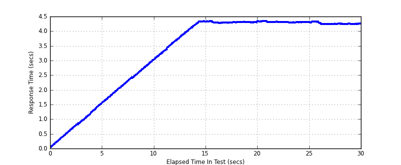
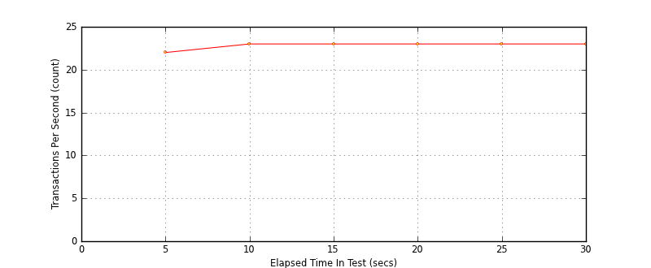
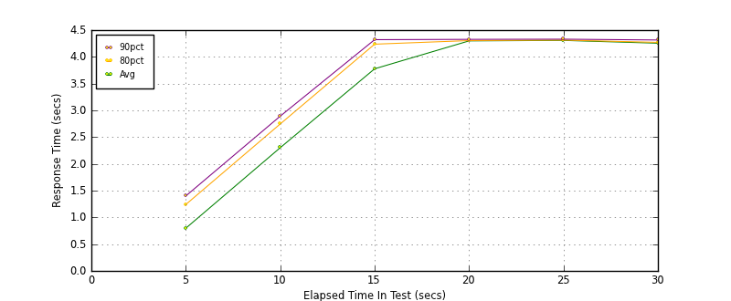

Performance Results Report
Summary
transactions: 791
errors: 0
run time: 30 secs
rampup: 10 secs
test start: 2014-01-17 14:33:06
test finish: 2014-01-17 14:33:36
time-series interval: 5 secs
workload configuration:
| group name | threads | script name |
|---|
| user_group-1 | 100 | read_user.py |
All Transactions
Transaction Response Summary (secs)
| count | min | avg | 80pct | 90pct | 95pct | max | stdev |
|---|
| 791 | 0.050 | 3.306 | 4.302 | 4.314 | 4.327 | 4.345 | 1.342 |
Interval Details (secs)
| interval | count | rate | min | avg | 80pct | 90pct | 95pct | max | stdev |
|---|
| 1 | 112 | 22.40 | 0.050 | 0.798 | 1.241 | 1.401 | 1.471 | 1.560 | 0.432 |
| 2 | 115 | 23.00 | 1.554 | 2.302 | 2.746 | 2.892 | 2.965 | 3.051 | 0.429 |
| 3 | 115 | 23.00 | 3.051 | 3.777 | 4.237 | 4.321 | 4.327 | 4.331 | 0.408 |
| 4 | 116 | 23.20 | 4.274 | 4.299 | 4.304 | 4.327 | 4.330 | 4.336 | 0.015 |
| 5 | 117 | 23.40 | 4.286 | 4.308 | 4.313 | 4.331 | 4.341 | 4.345 | 0.014 |
| 6 | 116 | 23.20 | 4.229 | 4.255 | 4.271 | 4.315 | 4.320 | 4.328 | 0.029 |
Graphs
Response Time: 5 sec time-series
Response Time: raw data (all points)

Throughput: 5 sec time-series

Custom Timer: get_tweets
Timer Summary (secs)
| count | min | avg | 80pct | 90pct | 95pct | max | stdev |
|---|
| 691 | 0.049 | 3.306 | 4.302 | 4.314 | 4.327 | 4.344 | 1.342 |
Interval Details (secs)
| interval | count | rate | min | avg | 80pct | 90pct | 95pct | max | stdev |
|---|
| 1 | 112 | 22.40 | 0.049 | 0.797 | 1.240 | 1.400 | 1.470 | 1.559 | 0.432 |
| 2 | 115 | 23.00 | 1.553 | 2.302 | 2.746 | 2.892 | 2.964 | 3.051 | 0.429 |
| 3 | 115 | 23.00 | 3.051 | 3.777 | 4.237 | 4.321 | 4.326 | 4.331 | 0.408 |
| 4 | 116 | 23.20 | 4.274 | 4.298 | 4.304 | 4.327 | 4.330 | 4.336 | 0.015 |
| 5 | 117 | 23.40 | 4.286 | 4.307 | 4.313 | 4.330 | 4.341 | 4.344 | 0.014 |
| 6 | 116 | 23.20 | 4.229 | 4.255 | 4.271 | 4.315 | 4.320 | 4.327 | 0.029 |
Graphs
Response Time: 5 sec time-series

Response Time: raw data (all points)
Throughput: 5 sec time-series